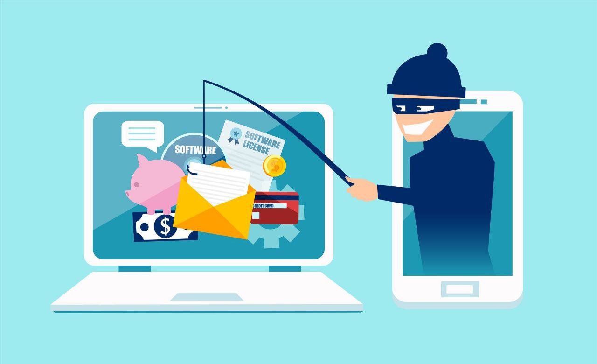

Урок 4. Фишинг

Что такое фишинг❓
- Фишинг — это вид интернет-мошенничества, при котором злоумышленники пытаются обманом заставить человека выдать личные данные:
- пароли,
- данные банковских карт,
- коды подтверждения,
- личные документы.
- Название происходит от английского fishing — «рыбалка», ведь злоумышленники «закидывают удочку» в надежде, что кто-то «клюнет».
Как работает фишинг❓
- Приманка — письмо, сообщение или сайт, который выглядит как официальный (банк, соцсеть, доставка).
- Ссылка — ведёт на поддельный сайт или скачивает вредоносный файл.
- Сбор данных — пользователь вводит пароль или номер карты, и они попадают к мошенникам.
Примеры фишинга
- 📧 Поддельные письма: «Ваш аккаунт заблокирован! Срочно перейдите по ссылке и подтвердите данные».
- 🌐 Фальшивые сайты: выглядят как сайт банка или магазина, но адрес отличается (например, paypaI.com вместо paypal.com — буква I вместо L).
- 📱 SMS или мессенджеры: «Вы выиграли приз», «Срочно оплатите доставку».
- 📞 Вишинг — звонок от «сотрудника банка», который просит назвать код из SMS.
Как распознать фишинг
- ⚠ Признаки:
- Срочные и пугающие сообщения («срочно», «последнее предупреждение»).
- Ошибки в тексте, странные ссылки.
- Адрес отправителя не совпадает с официальным.
- Требование ввести личные данные или пароль.
Как защититься
- ✅ Проверять адрес сайта (https:// и правильное имя домена).
- ✅ Не переходить по подозрительным ссылкам.
- ✅ Не вводить пароли, полученные коды или данные карты в сомнительных формах.
- ✅ Включить двухфакторную аутентификацию.
- ✅ Использовать антивирус с защитой от фишинга.
Задания
- Задание 1
- Задание 2
- Задание 3
Тест